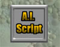
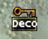

UDN
Search public documentation:
KeypointReference
Interested in the Unreal Engine?
Visit the Unreal Technology site.
Looking for jobs and company info?
Check out the Epic games site.
Questions about support via UDN?
Contact the UDN Staff
Keypoint Reference
Document Summary: Here you will find definitions for all of the actors found under the Keypoint section within the Actors Browser. Document Changelog: Last updated by Michiel Hendriks, minor update. Previously updated by Jason Lentz (DemiurgeStudios?) for creation purposes. Original author: Jason Lentz (DemiurgeStudios?).Introduction
They Keypoints within the Actors Browser are used for a couple different things, but most basically, they are special points in the map that can be used as some sort of reference by other Actors or scripts. Some Keypoint Actors are no longer used, but this document will go through and sort out which ones are useful and explain what they can be used for.AIScript

These Keypoint Actors can be used in conjunction withScriptedSequences to create AI for pawns in your level. For more about how to use AIScripts , see the ScriptedSequenceTutorial document.
AmbientSound
 This is a simple sound actor that can be placed in a level to loop a sound. For more about
This is a simple sound actor that can be placed in a level to loop a sound. For more about AbientSound Keypoints, see the ExampleMapsSounds document.
DecorationList

DecorationLists are actors that can define a list of StaticMeshes that will appear within a volume. To see more about DecorationLists , see the Volumes Tutorial document.
Matinee Keypoints
The following Keypoints are used in Matinee scenes:- InterpolationPoint
- LookTarget
InterpolatioPoint is a convenience actor that you can point a matinee camera at. Note that they aren't bStatic so they can be attached these to movers and such.
A LookTarget is a convenience actor that you can point a matinee camera at. Note that they aren't bStatic so they can be attached these to movers and such.
For more about how to use these Keypoints, see the MatineeTutorial document.
Editor Reference Keypoints
The following Keypoints should NOT be used as they are only used by the Editor itself during specific interface operations.- ClipMarker
- PolyMarker
ClipMarkers are markers for the brush clip mode. You place 2 or 3 of these in the level and that defines your clipping plane. These should NOT be manually added to the level. The editor adds and deletes them on its own.
PolyMarkers are markers for the polygon drawing mode. These should NOT be manually added to the level. The editor adds and deletes them on its own.
Obsolete/Unused Keypoints
The following Keypoints are obsolete and should not be used:- BlockAll
- BlockMonsters
- BlockPlayer
- SpectatorCam